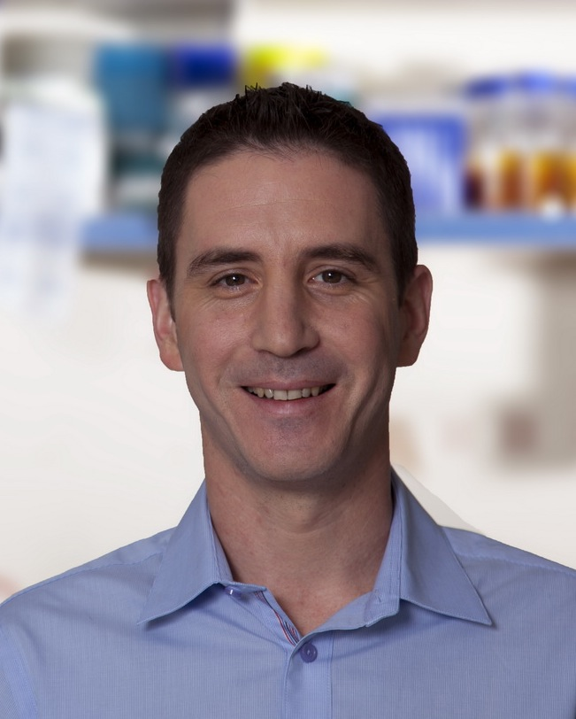
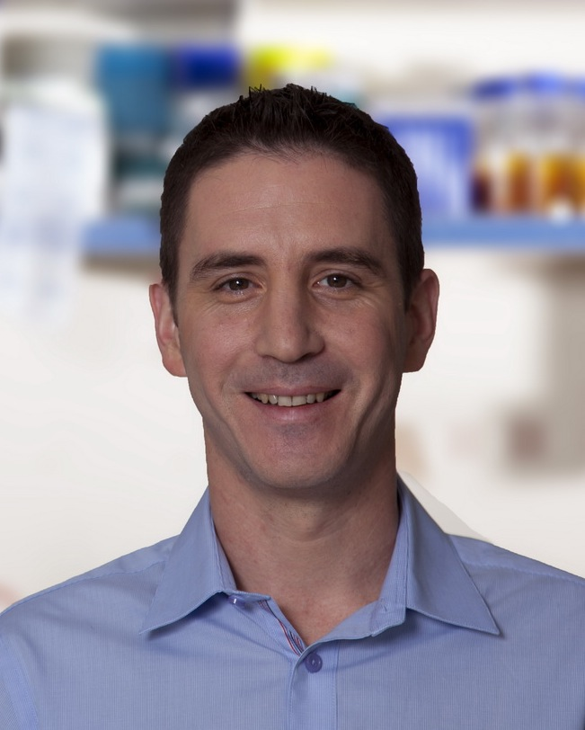

June 11-12, 2014

Prooceedings now available.
About IWBDA
The Sixth International Workshop on Bio-Design Automation (IWBDA) will bring together researchers from the synthetic biology, systems biology, and design automation communities to discuss concepts, methodologies and software tools for the computational analysis and synthesis of biological systems.
The field of synthetic biology, still in its early stages, has largely been driven by experimental expertise, and much of its success can be attributed to the skill of the researchers in specific domains of biology. There has been a concerted effort to assemble repositories of standardized components; however, creating and integrating synthetic components remains an ad hoc process. Inspired by these challenges, the field has seen a proliferation of efforts to create computer-aided design tools addressing synthetic biology's specific design needs, many drawing on prior expertise from the electronic design automation (EDA) community. The IWBDA offers a forum for cross-disciplinary discussion, with the aim of seeding and fostering collaboration between the biological and the design automation research communities.
IWBDA is organized by the non-profit Bio-Design Automation Consortium (BDAC). BDAC is an officially recognized 501(c)(3) tax exempt organization.
Topics of interest include:
- Design methodologies for synthetic biology.
- Standardization of biological components.
- Automated assembly techniques.
- Computer-aided modeling and abstraction techniques.
- Engineering methods inspired by biology.
- Domain specific languages for synthetic biology.
- Data exchange standards and models for synthetic biology.
ACS Synthetic Biology IWBDA 2014 Special Issue
We would like to invite all attendees to submit original work to the
ACS Synthetic Biology “IWBDA 2014” Special
Issue. ACS Synthetic Biology has the highest editorial standards,
offers rapid publication of your research findings and imposes NO
author submission, page, color, or cover art charges. We are looking
for high quality submissions, for peer-review, as either short Letters
or full-length Articles. The submission deadline is September
30, 2014.
If you wish to submit your research to the ACS Synthetic Biology
“IWBDA 2014” Special Issue, please see
the ACS Synthetic Biology Invitation
for instructions on preparing your manuscript.
Key Dates
- Registration Deadline: May 23, 2014
- Workshop: June 11-12, 2014
- ACS Synthetic Biology Special Issue deadline: September 30, 2014
Venue
The workshop will take place at the Photonics Center, 8 St. Mary's Street, Room 906, Boston, Massachusetts. Directions and a map are here.
IWBDA 2014 is co-located with Synthetic Biology Boston (SB2) in Boston, MA.
Sponsors
Specification
Design

Workflow

Tool

Class

Algorithm


Information about sponsorship is available here.
Keynote Speakers
Orit Shaer
Reality-Based Interaction for Bio- Design
Synthetic biology requires a multidisciplinary, collaborative
design environment in order to engineer the complex biological systems
of the future. Applying advances in Human Computer Interaction to
bio-design tools could potentially enhance innovation and discovery in
synthetic biology.
Over the past two decades, Human-Computer Interaction (HCI)
research has generated a broad range of interaction styles that move
beyond the desktop into new physical and social contexts. Key areas of
innovation in this respect include tabletop, tangible, and embodied
user interfaces. These interaction styles leverage users' existing
knowledge and skills of interaction with the real non-digital world,
thus are often referred to as Reality-Based Interfaces. By
drawing upon existing skills, reality-based interfaces offer the
promise of a natural, intuitive, and often, collaborative form of
interaction.
In this talk I will present a collection of software tools for bio
design, which, utilize reality-based interaction techniques. We
developed theses software tools to address specific technical
synthetic biology challenges while simultaneously advancing the way in
which users interact with computing environments. Through these case
studies, I will highlight what design factors are important for
developing reality-based interfaces for bio design that enhance
discovery and innovation.
Dr. Orit Shaer is the Clare Boothe Luce Assistant
Professor of Computer Science and Media Arts and Sciences at Wellesley
College. She directs the Wellesley College HCI Lab. Her research in
Human-Computer Interaction (HCI) focuses on 3D, tangible, tabletop,
and mobile interaction. a user interface for genomic research, and the
development of computational tools for enhancing innovation in
bio-design. Dr Shaer is a recipient of several National Science
Foundation and industry awards including the prestigious NSF CAREER
Award, Agilent Technologies Research Award, and Google App Engine
Education Award. She received her PhD and MSc in Computer Science from
Tufts University. She has been a research fellow in the Design Machine
Group at the University of Washington and in the University College
London Interaction Center.
Tuval Ben-Yehezkel
Advanced DNA Editing Platforms
Our ability to engineer biological systems depends, to a large extent, on our ability to physically write the DNA code that programs them. In this talk I will outline recent developments in biochemistry and automation technologies that advance our ability to deliver designer DNA libraries for advanced synthetic biology projects.

Dr. Tuval Ben-Yehezkel performed his PhD and post
doc work at the Weizmann Institute of Science in Israel under the
supervision of Prof. Ehud Shapiro in the field of synthetic
biology. Specifically, he focused on developing methods for rapid
writing of genetic material through the implementation of innovative
biochemistry and automation technology and applying them to various
biological problems. He is now a visiting scientist at the Weizmann
institute of science and has recently founded a start-up company
focused on applying synthetic biology technology for the rational
design and construction of synthetic viruses aimed to function as
live-attenuated vaccines.
Program
See the program and information for presenters.
Scholarships
Student scholarships are available for IWBDA. Please
see this PDF for details on how
to apply.
Submit to the "IWBDA 2014 Scholarship Track" on
the Easy
Chair site. Your submission (as an abstract or attached document)
must include the following:
- Your name and email address
- Your school and year of study (e.g., junior, 2nd year graduate student)
- A brief summary of your scientific research and work experience
- Your expected travel expenses
- A short statement (about 100 words) detailing why you seek support and how you plan to participate in the workshop (oral presentation, poster, etc.)
Abstract Submission
Abstracts should be two pages long and referenced, following the ACM SIG Proceedings templates at www.acm.org/sigs/publications/proceedings-templates. Inclusion of figures is encouraged. Indicate whether you would like your abstract considered for a poster presentation, an oral presentation, or both. Include the full names, affiliations and contact information of all authors. Abstracts should be submitted in pdf format and should not exceed two pages.
Abstracts will be reviewed by the Program Committee. Those that are selected for oral and poster presentations will distributed to workshop participants and posted on the workshop website.
Call For Abstracts full pdf
Abstract submission is now closed.
Access your submitted abstract at www.easychair.org/conferences/?conf=iwbda2014
Organizing Committee
Contact us at: iwbda-exec AT lists.bio-design-automation.org
- General Chair - Aaron Adler, BBN Technologies
- Finance Co-Chair - Traci Haddock, Boston University
- Program Committee Co-Chair - Patrick Cai, University of Edinburgh
- Program Committee Co-Chair - Michal Galdzicki, University of Washington
- Local Chair - Traci Haddock, Boston University
- Local Chair - Swati Carr, Boston University
- Publication Co-Chair - Nathan Hillson, JBEI
- Publication Co-Chair - Jackie Quinn
Email List
Sign up for the announcements email list here.
Past Years
- 6th International Workshop on Bio-Design Automation (IWBDA 2014): Boston, MA, June 11-12, 2014
- 5th International Workshop on Bio-Design Automation (IWBDA 2013): Imperial College, London, UK, July 12-13, 2013
- 4th International Workshop on Bio-Design Automation (IWBDA 2012): Moscone Center, San Francisco, CA, July 3-4, 2012
- 3rd International Workshop on Bio-Design Automation (IWBDA 2011): San Diego Convention Center, San Diego, CA, June 6-7, 2011
- 2nd International Workshop on Bio-Design Automation (IWBDA 2010): Anaheim, CA, June 14-15, 2010
- 1st International Workshop on Bio-Design Automation (IWBDA 2009): Moscone Center, San Francisco, CA, July 27, 2009
About IWBDA
The Sixth International Workshop on Bio-Design Automation (IWBDA) will bring together researchers from the synthetic biology, systems biology, and design automation communities to discuss concepts, methodologies and software tools for the computational analysis and synthesis of biological systems.
The field of synthetic biology, still in its early stages, has largely been driven by experimental expertise, and much of its success can be attributed to the skill of the researchers in specific domains of biology. There has been a concerted effort to assemble repositories of standardized components; however, creating and integrating synthetic components remains an ad hoc process. Inspired by these challenges, the field has seen a proliferation of efforts to create computer-aided design tools addressing synthetic biology's specific design needs, many drawing on prior expertise from the electronic design automation (EDA) community. The IWBDA offers a forum for cross-disciplinary discussion, with the aim of seeding and fostering collaboration between the biological and the design automation research communities.
IWBDA is organized by the non-profit Bio-Design Automation Consortium (BDAC). BDAC is an officially recognized 501(c)(3) tax exempt organization.
Topics of interest include:
- Design methodologies for synthetic biology.
- Standardization of biological components.
- Automated assembly techniques.
- Computer-aided modeling and abstraction techniques.
- Engineering methods inspired by biology.
- Domain specific languages for synthetic biology.
- Data exchange standards and models for synthetic biology.
ACS Synthetic Biology IWBDA 2014 Special Issue
We would like to invite all attendees to submit original work to the ACS Synthetic Biology “IWBDA 2014” Special Issue. ACS Synthetic Biology has the highest editorial standards, offers rapid publication of your research findings and imposes NO author submission, page, color, or cover art charges. We are looking for high quality submissions, for peer-review, as either short Letters or full-length Articles. The submission deadline is September 30, 2014.
If you wish to submit your research to the ACS Synthetic Biology “IWBDA 2014” Special Issue, please see the ACS Synthetic Biology Invitation for instructions on preparing your manuscript.
Key Dates
- Registration Deadline: May 23, 2014
- Workshop: June 11-12, 2014
- ACS Synthetic Biology Special Issue deadline: September 30, 2014
Venue
The workshop will take place at the Photonics Center, 8 St. Mary's Street, Room 906, Boston, Massachusetts. Directions and a map are here.
IWBDA 2014 is co-located with Synthetic Biology Boston (SB2) in Boston, MA.
Sponsors
Specification
Design
Workflow
Tool
Class
Algorithm
Information about sponsorship is available here.
Keynote Speakers
Orit Shaer
Reality-Based Interaction for Bio- Design
Synthetic biology requires a multidisciplinary, collaborative design environment in order to engineer the complex biological systems of the future. Applying advances in Human Computer Interaction to bio-design tools could potentially enhance innovation and discovery in synthetic biology.
Over the past two decades, Human-Computer Interaction (HCI) research has generated a broad range of interaction styles that move beyond the desktop into new physical and social contexts. Key areas of innovation in this respect include tabletop, tangible, and embodied user interfaces. These interaction styles leverage users' existing knowledge and skills of interaction with the real non-digital world, thus are often referred to as Reality-Based Interfaces. By drawing upon existing skills, reality-based interfaces offer the promise of a natural, intuitive, and often, collaborative form of interaction.
In this talk I will present a collection of software tools for bio design, which, utilize reality-based interaction techniques. We developed theses software tools to address specific technical synthetic biology challenges while simultaneously advancing the way in which users interact with computing environments. Through these case studies, I will highlight what design factors are important for developing reality-based interfaces for bio design that enhance discovery and innovation.
Dr. Orit Shaer is the Clare Boothe Luce Assistant Professor of Computer Science and Media Arts and Sciences at Wellesley College. She directs the Wellesley College HCI Lab. Her research in Human-Computer Interaction (HCI) focuses on 3D, tangible, tabletop, and mobile interaction. a user interface for genomic research, and the development of computational tools for enhancing innovation in bio-design. Dr Shaer is a recipient of several National Science Foundation and industry awards including the prestigious NSF CAREER Award, Agilent Technologies Research Award, and Google App Engine Education Award. She received her PhD and MSc in Computer Science from Tufts University. She has been a research fellow in the Design Machine Group at the University of Washington and in the University College London Interaction Center.
Tuval Ben-Yehezkel
Advanced DNA Editing Platforms
Our ability to engineer biological systems depends, to a large extent, on our ability to physically write the DNA code that programs them. In this talk I will outline recent developments in biochemistry and automation technologies that advance our ability to deliver designer DNA libraries for advanced synthetic biology projects.

Dr. Tuval Ben-Yehezkel performed his PhD and post doc work at the Weizmann Institute of Science in Israel under the supervision of Prof. Ehud Shapiro in the field of synthetic biology. Specifically, he focused on developing methods for rapid writing of genetic material through the implementation of innovative biochemistry and automation technology and applying them to various biological problems. He is now a visiting scientist at the Weizmann institute of science and has recently founded a start-up company focused on applying synthetic biology technology for the rational design and construction of synthetic viruses aimed to function as live-attenuated vaccines.
Program
See the program and information for presenters.Scholarships
Student scholarships are available for IWBDA. Please see this PDF for details on how to apply.
Submit to the "IWBDA 2014 Scholarship Track" on the Easy Chair site. Your submission (as an abstract or attached document) must include the following:
- Your name and email address
- Your school and year of study (e.g., junior, 2nd year graduate student)
- A brief summary of your scientific research and work experience
- Your expected travel expenses
- A short statement (about 100 words) detailing why you seek support and how you plan to participate in the workshop (oral presentation, poster, etc.)
Abstract Submission
Abstracts should be two pages long and referenced, following the ACM SIG Proceedings templates at www.acm.org/sigs/publications/proceedings-templates. Inclusion of figures is encouraged. Indicate whether you would like your abstract considered for a poster presentation, an oral presentation, or both. Include the full names, affiliations and contact information of all authors. Abstracts should be submitted in pdf format and should not exceed two pages.
Abstracts will be reviewed by the Program Committee. Those that are selected for oral and poster presentations will distributed to workshop participants and posted on the workshop website.
Call For Abstracts full pdf
Abstract submission is now closed.
Access your submitted abstract at www.easychair.org/conferences/?conf=iwbda2014
Organizing Committee
Contact us at: iwbda-exec AT lists.bio-design-automation.org
- General Chair - Aaron Adler, BBN Technologies
- Finance Co-Chair - Traci Haddock, Boston University
- Program Committee Co-Chair - Patrick Cai, University of Edinburgh
- Program Committee Co-Chair - Michal Galdzicki, University of Washington
- Local Chair - Traci Haddock, Boston University
- Local Chair - Swati Carr, Boston University
- Publication Co-Chair - Nathan Hillson, JBEI
- Publication Co-Chair - Jackie Quinn
Email List
Sign up for the announcements email list here.
Past Years
- 6th International Workshop on Bio-Design Automation (IWBDA 2014): Boston, MA, June 11-12, 2014
- 5th International Workshop on Bio-Design Automation (IWBDA 2013): Imperial College, London, UK, July 12-13, 2013
- 4th International Workshop on Bio-Design Automation (IWBDA 2012): Moscone Center, San Francisco, CA, July 3-4, 2012
- 3rd International Workshop on Bio-Design Automation (IWBDA 2011): San Diego Convention Center, San Diego, CA, June 6-7, 2011
- 2nd International Workshop on Bio-Design Automation (IWBDA 2010): Anaheim, CA, June 14-15, 2010
- 1st International Workshop on Bio-Design Automation (IWBDA 2009): Moscone Center, San Francisco, CA, July 27, 2009